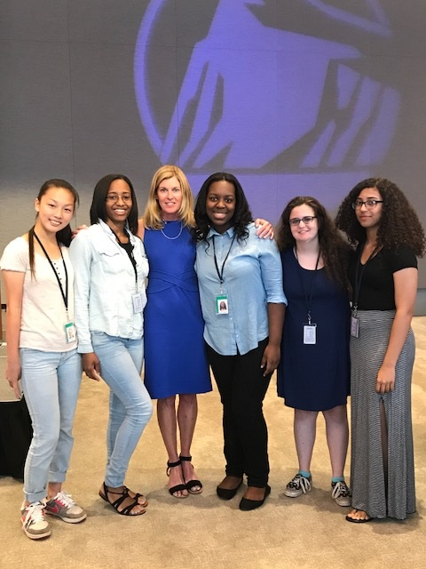
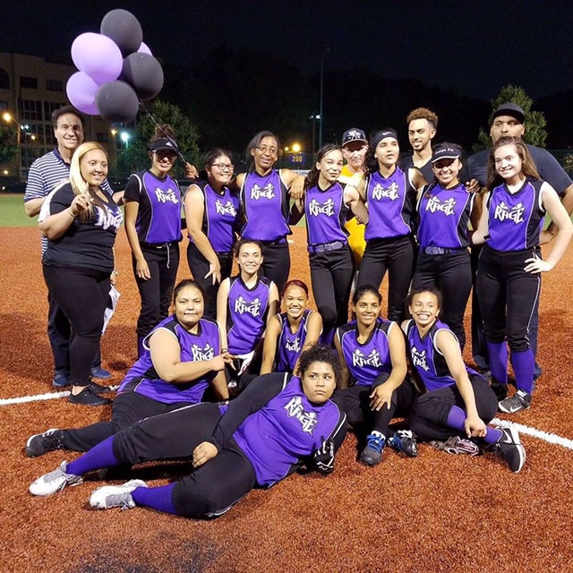
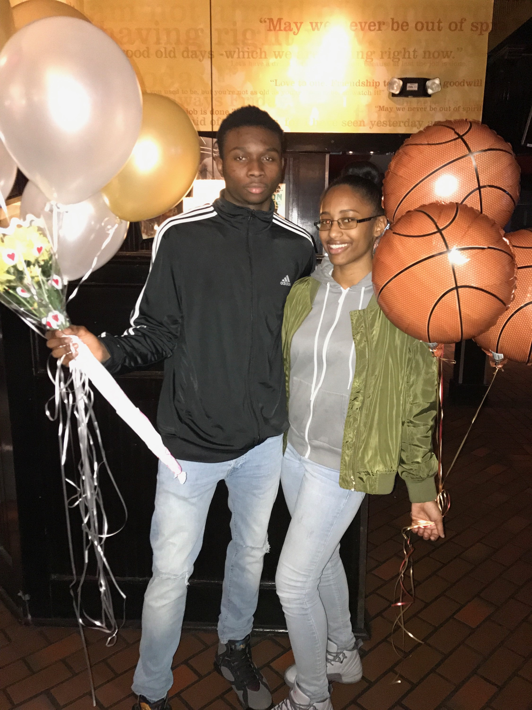

Be fearless in the pursuit of what sets your soul on fire.
I am the youngest of my four siblings.
Currently I am spending my summer at the Girls Who Code Summer Immersion Program. The summer program is for current 10th-11th grade girls to learn coding and get exposure to tech jobs
During my free time I play a lot of ports, specifically softball. I have a huge passion for it. Recently my team and I went undefeated through the playoff series and ultimately won the championship. There wasn't a better way to end our season.
I also love to be a big support system for my friends. As a high school junior my best friend scored a thousand points playing basketball. Although I could not make it to the game because of work, I made it my duty to go celebrate and recognize his accomplishment.
